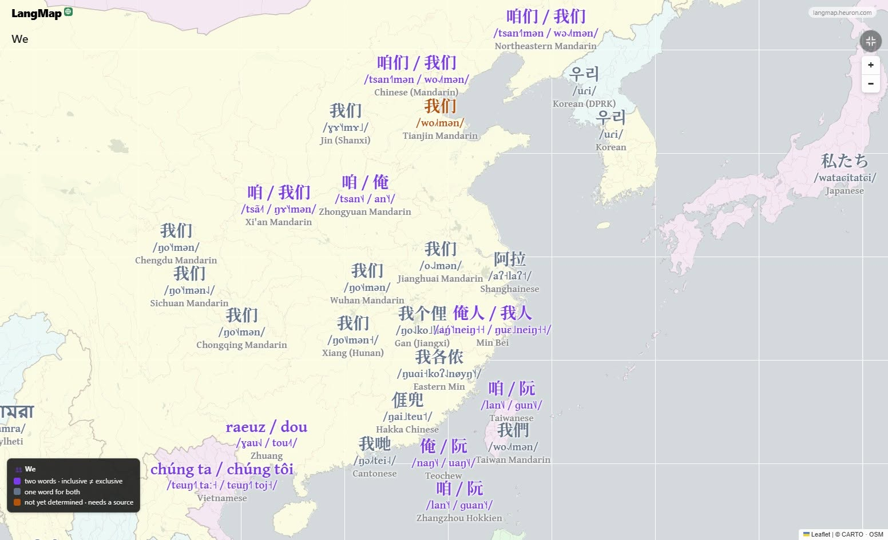

Sinosphere · · revised · Facebook post
Two Kinds of "We" in Mandarin Chinese: 咱们 and 我们
- Northern Mandarin has two words for "we": 咱们 (zánmen), which includes you, and 我们 (wǒmen), which can leave you out.
- Hokkien, Teochew, Hakka, Vietnamese and Zhuang make the same split, with words of their own.
- Japanese, Korean, Cantonese and Shanghainese do not, and Old Chinese used one word, 我, for both "I" and "we".

Contents
Two kinds of "we"
English has one "we".
When you say "we are going to dinner", your listener has to guess: am I invited?
Northern Mandarin can answer that question with the pronoun itself.
咱们 (zánmen) = we, including you
我们 (wǒmen) = we, often not including you
Compare:
咱们走吧。 "Let's go." (you and me)
我们走了。 "We're leaving." (and you are staying)
Linguists call this the difference between an inclusive and an exclusive "we".
Mandarin's split is a soft one. 我们 is also the general word for "we", and many speakers, especially in the south and in Taiwan, use it for everyone and rarely say 咱们 at all. On the Word Map, Taiwan Mandarin is coloured as having just one word: 我們.
But where 咱们 is in use, choosing it says something: you are one of us.
The split runs through southern China
The distinction is not only a northern Mandarin habit.
Look at the coast of Fujian and Taiwan:
Taiwanese Hokkien: 咱 (lán) / 阮 (goán, also gún)
Teochew: 俺 / 阮
Haikou (Hainanese): 咱侬 / 我侬
In each pair, the first form is inclusive and the second exclusive.
Taiwanese Hakka has the same contrast:
𫣆兜 / 𠊎兜
And the northern pairs vary from city to city:
Jinan: 咱们 / 俺们
Xi'an: 咱 / 我们
Zhengzhou: 咱 / 俺
Different characters, different sounds, the same distinction: with you or without you.
And the languages that never split
Now look at the neighbours that use a single word.
Cantonese: 我哋 (ngo5 dei6)
Shanghainese: 阿拉
Fuzhou: 我各侬
Korean: 우리 (uri)
Japanese: 私たち (watashitachi)
Cantonese and Shanghainese are Chinese varieties, yet they have one "we".
Korean comes close to the distinction in a different way. Its humble form 저희 (jeohui) lowers "us" before the person you are speaking to, so in practice it usually leaves that person out. But that is politeness, not a separate inclusive pronoun: 우리 still covers both.
And the oldest Chinese did not even separate "I" from "we". The Word Map gives Old Chinese 我 for "we", the same word as "I".
Beyond the Sinosphere
South of China, the split becomes ordinary.
Vietnamese: chúng ta / chúng tôi
Indonesian and Malay: kita / kami
Tagalog: tayo / kami
Zhuang: raeuz / dou
Every Vietnamese, Indonesian or Filipino speaker makes this choice many times a day.
Further north, Manchu has it too: muse / be.
Roughly a third of the world's languages draw this line inside their free pronouns. English is not among them, and neither, for the most part, is Chinese.
So Mandarin's 咱们 is a little unusual for Chinese, and ordinary for the region.
One word, or two
Go back to Beijing.
咱们 (zánmen): you, me, and maybe others
我们 (wǒmen): me and my group, and maybe not you
Two syllables are enough to invite someone in, or to leave them politely outside.
English needs a whole sentence to say what one Mandarin pronoun says: you are one of us.